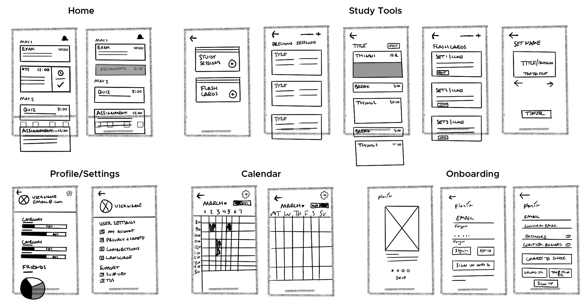

Overview
PlanIt is an iOS mobile application prototype targeted at students who do not use planners or traditional methods to stay on top of their tasks and assignments. PlanIt was created as a class project alongside three other team members utilizing Goal-Directed Design. PlanIt focuses on three main challenges derived from user interviews and research to keep the focus on user goals while addressing business needs.
Challenges
- Encourage and simplify the process of staying organized
- Help students achieve their academic goals
- Reduce the stress of staying on track

The Project
For my senior project class I worked alongside 3 other team members, Derek Duty, Ralston Fitler, and Iegor Gutyria on the PlanIt student planner and assistant app. As students ourselves nearing the end of our college careers we have an understanding of the importance of keeping on top of one's work. We understand the difficulties and attitudes often associated with attending college, especially those starting their college career. We wanted to target the app at benefiting and assisting others in a position that we were once in. The app was designed using the Goal-Directed Design Process.
Design Process
Goal-Directed Design is a user-centered methodology created by Alan Cooper. This multi-stage process allows for a solid foundation in research to get a better understanding of users before developing a solution to design and test. The bulk of the process focuses on research to discover information about the user including their goals and behaviors. This foundation in research is used to deliver a product that focuses on user goals and expectations. The steps include research, modeling, requirements, framework, and refinement in that order.
The Goal-Directed Design Process Steps
Research
We conducted research to establish an understanding of the potential domain, competitive technologies, and user goals & behaviors. This research allows us to create a solution that matches our user expectations, behaviors, and goals. Having a better understanding of what the user looks like means establishing requirements for the app that are more targeted at users while aligning with business goals and requirements.
The research stage within Goal-Directed Design is a process used to establish the groundwork for creating our application as it details expectations, information on the domain, current technologies, and ultimately user goals. The research stage involves a kickoff meeting to discuss plans and timelines, a literature review to survey the domain, a competitive audit to explore existing technologies, and user interviews to discover user goals and behaviors. The purpose is to ensure that the final product reflects the user goals while bridging the gap with business needs and goals.
Targeted Information
- Establish business needs and goals
- Become more informed on the domain
- Explore current technologies and views
- Understand our users’ behaviors and goals
Competitive Audit
To gain a stronger understanding of competitor technology and user views on them, we completed a competitive audit. This step allowed us to get a better sense of what was currently being offered and how their users felt about the solution. This area was my main focus during this phase of the research along with my team member, Derek. We utilized both the Apple App Store and Google Play Store to examine various mobile applications. We primarily examined planner apps but also looked into technologies that automate the input of information such as tax filing tools. Although this information proved extremely insightful as to what information to look for in user interviews and what was currently possible with technology, it did not establish what specifically our app would look like as we wanted to be certain that our solution focused on our user goals.
Findings
We discovered that although there are a large number of planner apps targeted at students, none of them target students not accustomed to planning. In most cases, the apps focus on a monthly overview rather than a more bite-sized weekly or daily view. Although some offer the option of a weekly or daily view, the menu systems are overloaded with options to navigate there. Additionally, no app offers every positive feature found across the list. The apps also lack convenience when inputting information. Overall, the apps simply seek to replace physical planners rather than improve them.

The Competitive Audit Feature Results
User Interviews
To properly understand who our users are and what their goals are, we conducted user interviews. We looked for information such as in what context the application fits into their lives, their goals, motivations, mental models, and problems or frustrations within the domain of online streaming. To achieve this knowledge, we first created a persona hypothesis which is used to define the different types of users we might expect to have. These are used to think about what our users might look like in terms of what type of people might use our application, how their needs and behaviors may vary, and what behaviors and environments that might need to be explored.
We had a moderator who focused on having a conversation while the facilitators made notes and asked the participant to clarify points or speak more deeply about comments that came up in the discussion. It was my job to ensure that any important details that were mentioned by the participant were noted and explored. I would ask them to expand on or clarify any details they mentioned that might help us better understand who they are and what their goals are. The ultimate goal was to discover who they were as a person so that we could be informed in our decisions later in the design process.
Interview Results
- Whether they use planners or not
- Study habits and preferences
- Focus on school or personal life
- General attitude towards school
- How busy their lives are
An interview Session
Affinity Mapping Our Ideas
Modeling
We mapped and synthesized data from user interviews to discover patterns and create our personas. These patterns were used to map the participants into groupings. The groupings become personas and have classifications based on their needs or uses of the product. As a means of easily digesting this information, personas are created to take the major components of the various participants and map the similarities to find groupings among the users and represent them as a model. This model is displayed as a persona to help the designers, stakeholders, and others involved in the project understand the users while keeping a focus on their goals.
We established two personas. The first is our primary user who does not use a planner or proactive approach to stay on top of their coursework. The secondary user is a more proactive and studious person who already utilizes physical planners and materials to stay on top of their tasks. These two personas will be referenced throughout the design process to easily tie back our decisions to the data collected. We wanted to make sure that our decisions were solving the problems and goals experienced by our participants that we interviewed.
Alan Stevenson
|
Primary Persona
“I want to quickly and easily get through college so I can begin my career”
- Age: 21
- Title: Full-Time Student
- Job: Retail
Goals
- Complete his tasks
- Be prepared for exams
- Enjoy his personal life
- Graduate college
Bio
Alan is a full-time student and also works a part time retail job. His main focus is graduating from college so he can begin his career. He relies primarily on his own memory to keep up with assignments and exams but often finds himself completing them right before they are due.
He greatly enjoys utilizing technology, however it is primarily for leisure and communication. His phone is his primary access point but he does utilize his laptop when applicable to access the university’s online portal. He uses the portal to view assignments and class syllabi.
Alan utilizes a mix of solo and group studying techniques to get through school. He does his best to balance studying in a way that includes breaks to help motivate him to get through a study session.
Behaviors
- Puts things off to the last minute
- Focus on personal life over school
- Constantly balancing school and work life
Maria Louis
|
Secondary Persona

“I want to learn as much as possible in college to prepare me for my career”
- Age: 22
- Title: Full-Time Student
- Job: None
Goals
- Get As in her classes
- Get a solid education
- Graduate college
Bio
Maria is a full-time student. Her main focus is doing well in school and setting herself up to succeed in her future career. She utilizes a variety of traditional tools to keep up with all her classes and activities. She has a calendar hung up in her room and always carries her planner.
She uses technology fairly frequently but would not consider herself very tech savvy. She primarily uses her phone for social media and connecting with others and her laptop for schoolwork.
Maria will print out all her material for her classes such as her syllabus and any other information that she will need to refer to throughout the semester. She primarily studies in a solo setting but often volunteers to help other students who are struggling with a subject.
Behaviors
- Puts everything into writing
- Uses a physical planner for reminders
- Constantly preparing for exams and classes
The Requirements
Once we understood what our users looked like and determined what their goals and behaviors were, we began to discuss the requirements of the app. We did this by constructing context scenarios in which our users would use our product such as the environment, amount of time available, and potential distractions. This helped us put ourselves into their shoes for the day and consider all the various ways the app might be used. By considering these contexts we discussed and came up with several requirements. These requirements are not specific features or layouts within the product but rather what the app will do at a higher level.
Primary Requirements
- Easy access to information for the day
- Balance time/keep on track
- Help stay organized
- Make life easier/automate aspects of life
- Prepare them for school week
The Framework
Once we established the research on the domain and technologies, understood our users and their goals, and determined the requirements, we were able to begin discussing the wireframe and design. I took the lead and discussed with my team as I drew wireframe designs on a whiteboard. We collaborated on the initial designs and user flows before refining the designs to be certain we covered all aspects of the app.
We first drew out the main interaction, the key path scenario, before designing the supplemental features. The key path scenario design allowed us to establish the beginning framework before designing the secondary screens. This includes all the information they would be looking for, information needed to navigate, what interactions would occur, any secondary menus, and selection boxes based on inputs.

Detailed Wireframes Sketches
Refinement
Once we established the overall layout of our design we were able to move forward in creating the prototype. We started with a digital design that we printed to be used as a low fidelity prototype for usability testing. It was decided to create a paper prototype to quickly create a design that could be interacted with while also allowing discussion of flows with the user. The prototype took our designs and user flows from our wireframe designs and converted them into a digital design that could be printed. It detailed all primary screens and interactions while including basic information to simulate a real experience.
Usability Test
We had a moderator, Derek, give the instructions and questions to the user while I was in charge of placing the new screens as the user interacted with the prototype. We utilized a set of usability questions that had the user go through many scenarios to allow the user to fully interact with the prototype while thinking aloud to disclose their thoughts and decisions. This early test was crucial to verifying our user flows and concepts before moving too far into our design direction. We were able to address concerns that were a cause of confusion for the users and consider alternate solutions when creating the high fidelity prototype.
Test Results
- Button placement on the homepage
- Study session user flow confusion
- Use of swipe over tap to interact
- Clarity of navigation icons

Low Fidelity Printouts for Usability Testing
Final Prototype
Once we established our primary user flow according to our low fidelity test, we moved to Figma to create a medium fidelity and eventually a high fidelity prototype. We utilized the same style usability tests used for the low fidelity prototype, only with the addition of questions regarding visual aspects and more thorough interaction questions. Tests were conducted throughout the process of making the medium and high fidelity prototypes. We used these testing sessions to verify our choices made and tweak areas of confusion or change the flow to better suit our users’ expectations. This was done until an acceptable final prototype was achieved.
Usability Testing
The primary area of focus revolved around the study session flows. We wanted to create an automated way of allowing the users to focus on their tasks with intermittent breaks. Other areas of this testing focused on smaller features and interactions to ensure that the product worked and matched our user expectations. We did a total of three rounds of high fidelity testing to ensure all the small details of the application were worked out.
Once we established what we needed to fix and address, we continued to work on the prototype and test along the way. This took several rounds specifically for the study sessions for us to smooth everything out for a final product. During the final stages the COVID-19 pandemic did occur, but thankfully we were able to transition into a virtual environment to finish our prototyping and testing.
Testing Results
- Technical issues with prototype
- Process of connecting with school not clear
- Secondary button function on navigation bar not always clear
- Entire flow of study session was confusing to users


Challenges
Throughout the design process we focused on three challenges. These challenges are based on discoveries from our user interviews. We established these to be the three primary pillars of both what users wanted as well as a means of pushing our product above the others. Focusing on these pillars allowed us to tackle the challenges in an order from large to small to ensure we met all the expectations and requirements. The three main challenges: encouraging students and simplify the process of staying organized, help achieve their academic goals, and reducing the stress of staying on track. Below is a breakdown of the three primary challenges.
Challenge 1:
Stay Organized
Our primary focus was on allowing students to stay organized and on top of their tasks. We wanted to make the experience and interaction with tracking tasks as simple and streamlined as possible. There are inherent barriers to using physical planners that we sought to overcome. We wanted to create a flexible experience to automatically display information that students already have access to on their syllabuses by automatically importing this data. We also wanted to allow users to easily track what they have going on for the day and mark tasks completed to ensure they are on top of their work. We focused on a daily overview to more easily allow the users to digest the information.
Challenge 2:
Achieve Goals
We wanted to ensure that our app focused on helping students get through college. We sought to implement gamification in the form of a tracker under the profile page, however further gamification features would need to be implemented to fully assist and encourage the users. We added secondary features that allow users to both study flashcards according to their classes and the ability to set a timer utilizing the Pomodoro Technique to better make use of their time. We wanted this study time to be flexible and fit around the users' busy lives while also breaking up the time to reduce stress and increase impact. Ultimately, we want our users to be prepared for their classes and pass their exams, assignments, and quizzes and implemented features targeted at all categories.


Challenge 3:
Reduce Stress
We explored the concept of reducing stress for our users as initial interviews discovered that our participants had to balance their college, work, and personal lives and often had little time between. A focus on simplicity and ease of use was kept in mind as to not add any cognitive load or stress to the users. By implementing automation and bite-size overviews, we wanted to create a product that does not add any more time constraints to the lives of our users. We also made decisions to make the colors a friendly color while still being customizable if the user chose to change them.
Takeaway
This project was extremely insightful and rewarding. This was a great exploration of the Goal-Directed Design process as it allowed me to better cement my understanding of research and design-focused around user goals and behaviors. Being able to conduct research and interviews to establish a plan and keep focus around users allowed for the creation of a product with a focus on the users' goals while maintaining business needs. By implementing testing we were able to adjust, correct, and verify our decisions to ensure a well-developed solution. Being able to connect the dots of each step helps instill confidence in the decisions we made along the way.
Although I am pleased with the outcome of this project there definitely were speed bumps along the way. Our goal of automation initially distracted us from user goals when we explored the idea of study sessions to implement the Pomodoro Technique of studying. It took several rounds of testing to implement a simplified solution according to our user responses. This proved the importance of testing and stepping back to view the more simplistic path versus a more technologically advanced feature. I plan on taking more steps back to get a better look at the overview versus focusing too much on specific details.